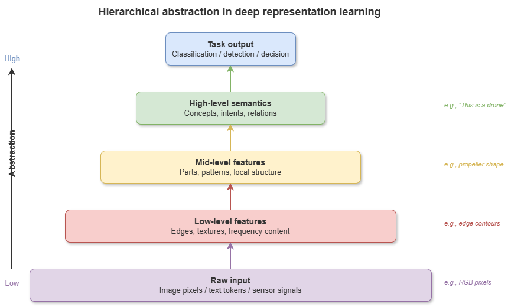
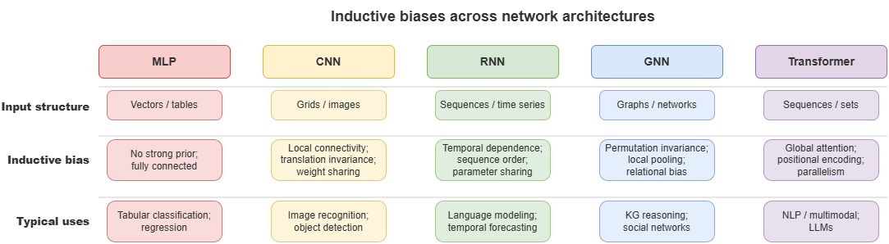
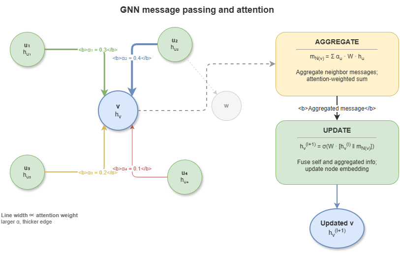

Chapters 2–3 (logic, KGs) foreground “System 2” cognition—highly interpretable with tight inference chains but often weak on high-dimensional, continuous, noisy perception. True neuro-symbolic fusion requires “System 1”—the connectionist paradigm centered on deep learning. This chapter surveys deep representation learning, graph neural networks, and temporal modeling, and analyzes intrinsic limits of purely data-driven models—preparing for injecting symbolic knowledge into neural nets and moving toward constrained learning.
4.1 Basic ideas of deep representation learning#
Classical machine learning relied heavily on feature engineering—hard for radar point clouds, high-rate ADS-B tracks, video streams, and similar low-altitude sensing data. Deep learning’s breakthrough is representation learning: multi-layer nonlinear transforms that learn hierarchical features from low-level cues (edges, track segments) to high-level semantics (conflict patterns, flight intent).
In neural representation, discrete entities and continuous signals map to high-dimensional embeddings—dense vectors preserving latent semantic similarity and enabling end-to-end optimization by backpropagation across classification, regression, and prediction tasks.
4.2 Inductive biases of neural networks and function approximation#
The universal approximation theorem states that feedforward nets with enough hidden units and nonlinear activations can approximate any continuous function arbitrarily well. With finite data, perfect maps are unrealistic; inductive biases in architecture improve generalization:
Multilayer perceptron (MLP): weak bias—any feature interactions possible.
Convolutional neural network (CNN): locality and translation equivariance/invariance—suited to grid-like data (e.g. raster maps of static obstacles in urban low altitude).
Recurrent neural network (RNN): temporal dependence—current state strongly depends on history.
Choosing perception and prediction modules in neuro-symbolic systems requires understanding these biases.
4.3 Graph neural networks: message passing, relational modeling, graph representation#
Low-altitude traffic is inherently a network: UAS and cells as nodes; communication links, spatial proximity, and organizational relations as edges. Standard CNNs/RNNs do not natively handle non-Euclidean graph data.
Graph neural networks (GNNs) target relational data. Core mechanism: message passing. In layer \(l{+}1\), node \(v\)’s features \(h_v^{(l+1)}\) depend on its previous features \(h_v^{(l)}\) and aggregated neighbor messages from \(\mathcal{N}(v)\):
Repeated rounds capture graph topology. In KG-driven reasoning, GNNs (e.g. R-GCN, GAT) learn entity embeddings and embed logical relation types on edges, linking discrete symbolic graphs to continuous computational graphs.
4.4 Transformer and attention mechanisms#
Transformers have reshaped deep learning—unifying much of NLP and spreading to vision and time series. The key is self-attention.
Unlike RNN recurrence, self-attention computes relevance weights between all pairs in a sequence, enabling global, parallel modeling of long-range dependence:
For low-altitude governance, Transformers help: long-horizon multi-UAS trajectory prediction with attention highlighting high-threat neighbors; as the backbone of LLMs, they also support parsing natural-language aviation rules into structured constraints.
4.5 Temporal modeling and learning dynamical systems#
Safety-critical systems evolve over time. Temporal modeling predicts future evolution from historical state sequences.
Sequence-to-sequence (seq2seq) models: trajectory and intent prediction—encoder summarizes history; decoder autoregressively predicts future tracks.
Spatiotemporal GNNs: combine GNNs (space) with temporal modules (e.g. GRU, TCN)—e.g. GCN over airspace grid adjacency plus temporal dynamics per cell for traffic-flow prediction.
Neural ODEs: for vehicles with clear kinematics, coupling nets with ODEs can model continuous-time dynamics precisely.
4.6 Limits of deep learning: OOD behavior, hallucination, catastrophic forgetting, fragility#
Despite successes, applying deep models directly to safety-critical low-altitude traffic exposes failures that drive the “two-peaks dilemma”:
Out-of-distribution (OOD) generalization: deep models behave like advanced statistical interpolators; under unseen extreme weather or rare interaction patterns, performance can collapse.
Hallucination: LLMs in particular can generate fluent but false instructions or explanations—unacceptable in aviation.
Catastrophic forgetting: continual learning of new tasks can erase critical prior knowledge (e.g. basic separation rules).
Black boxes and adversarial fragility: billions of parameters resist human logical review; tiny adversarial or sensor perturbations can yield catastrophic decisions.
4.7 From deep models to constrained learning#
The response is not to discard deep learning but to rein it in.
Constrained learning is a core entry point for neuro-symbolic AI: instead of unbounded parameter search, inject prior knowledge, physical laws, and regulatory rules from Chapter 3’s knowledge base as hard or soft constraints in losses, architectures, or decoders—e.g. energy balance, minimum separation standards.
Only when continuous neural representations run inside strict discrete logical frames can next-generation systems combine rich perception with interpretable, verifiable, trustworthy behavior—setting up later hybrid neuro-symbolic reasoning.
4.8 Supplement: graph Transformers, over-smoothing, and positional encodings#
4.8.1 Graph Transformer#
After Transformers’ success in NLP and vision, graph Transformers merge Transformer attention with graph structure. Classical GNNs rely on local message passing with limited receptive fields; graph Transformers treat nodes as sequence tokens with global self-attention, often biasing attention with topology—combining GNN-like structural inductive bias with Transformer global modeling.
Graphormer, SAN (Spectral Attention Network), GPS (General, Powerful, Scalable Graph Transformer), among others, lead benchmarks. For neuro-symbolic systems, unifying local logical chaining along KG edges with long-range semantic patterns is especially valuable.
4.8.2 GNN over-smoothing#
Over-smoothing: deep message passing expands receptive fields; with too many layers, node representations collapse toward similar values, losing discriminability—analogous to repeated Laplacian smoothing on graphs.
Practical GNN depth often stays modest (roughly 4–8 layers). Mitigations include residual connections, Jumping Knowledge (JK) aggregation across layers, graph normalization, and DropEdge (random edge dropout). In dynamic low-altitude graphs, these choices affect whether models retain depth and node-level distinction under complex topology.
4.8.3 Positional encodings for graphs#
Unlike sequences, graphs lack canonical node orderings; standard GNNs struggle to distinguish structurally similar but functionally different nodes (related to 1-WL expressivity limits). Graph positional encodings (PEs) inject structural position:
Laplacian PE: first \(k\) eigenvectors of the graph Laplacian as node features.
Random-walk PE: \(k\)-step return probabilities summarizing local structural role.
PEs are central in graph Transformers—e.g. distinguishing hub waypoints from terminal vertiports despite similar local connectivity.
4.8.4 Foundation models and graph learning#
Inspired by LLMs, graph foundation models pretrain on large heterogeneous graphs with self-supervision, then fine-tune or prompt for downstream tasks—potentially cutting per-task training cost and supplying robust base representations for neuro-symbolic systems adapting to new airspace layouts and traffic patterns with limited labels.
Chapter summary#
This chapter positioned deep learning, graph learning, and neural representation as the indispensable connectionist pole of neuro-symbolic systems: hierarchical representations from deep nets; inductive biases in CNNs, RNNs, and beyond; GNNs for relational non-Euclidean data; Transformers and attention for long-range context; temporal models for prediction and control; and explicit limits—OOD behavior, hallucination, forgetting, opacity—motivating knowledge constraints and constrained learning.
Key concepts#
Representation learning: learning layered features from data automatically.
Inductive bias: architectural priors shaping what patterns are easy to learn.
Graph neural network: family of models using message passing on graphs.
Transformer: attention-centric architecture for long-range dependencies.
Constrained learning: injecting rules, physics, or priors into training/inference.
Discussion questions#
Why are GNNs a natural fit for knowledge graphs and temporal relational graphs?
Why does inductive bias matter for model choice in safety-critical settings?
Without symbolic rules or knowledge constraints, what failure modes are most likely for pure deep models in low-altitude traffic?
Case study#
Local multi-UAS conflict sensing: compare an MLP on single-vehicle state with a GNN encoding neighbors and corridor relations; contrast conflict alerting, local interpretability, and behavior under OOD scenarios.
Figure suggestions#
Figure 4-1: Hierarchical abstraction in deep representation learning.

Figure 4-2: Inductive biases of MLP, CNN, RNN, GNN, Transformer.

Figure 4-3: GNN message passing and attention schematic.

Formula index#
GNN message passing: \(h_v^{(l+1)} = \mathrm{UPDATE}\!\left(h_v^{(l)},\;\mathrm{AGGREGATE}\!\left(\{h_u^{(l)} \mid u \in \mathcal{N}(v)\}\right)\right)\)
Attention: \(\mathrm{Attention}(Q, K, V) = \mathrm{softmax}\!\left(\dfrac{QK^\top}{\sqrt{d_k}}\right)V\)
Note: formulas highlight graph propagation and global attention as two core neural mechanisms.
References#
Hornik, K., Stinchcombe, M., & White, H. (1989). Multilayer Feedforward Networks Are Universal Approximators. Neural Networks, 2(5), 359–366.
Kipf, T. N., & Welling, M. (2017). Semi-Supervised Classification with Graph Convolutional Networks. International Conference on Learning Representations (ICLR).
Vaswani, A., Shazeer, N., Parmar, N., Uszkoreit, J., Jones, L., Gomez, A. N., Kaiser, Ł., & Polosukhin, I. (2017). Attention Is All You Need. Advances in Neural Information Processing Systems (NeurIPS).
Veličković, P., Cucurull, G., Casanova, A., Romero, A., Liò, P., & Bengio, Y. (2018). Graph Attention Networks. International Conference on Learning Representations (ICLR).
Gilmer, J., Schoenholz, S. S., Riley, P. F., Vinyals, O., & Dahl, G. E. (2017). Neural Message Passing for Quantum Chemistry. Proceedings of the 34th International Conference on Machine Learning (ICML).
Chen, R. T. Q., Rubanova, Y., Bettencourt, J., & Duvenaud, D. (2018). Neural Ordinary Differential Equations. Advances in Neural Information Processing Systems (NeurIPS).
Wu, Z., Pan, S., Chen, F., Long, G., Zhang, C., & Yu, P. S. (2021). A Comprehensive Survey on Graph Neural Networks. IEEE Transactions on Neural Networks and Learning Systems, 32(1), 4–24.
Goodfellow, I., Bengio, Y., & Courville, A. (2016). Deep Learning. MIT Press.